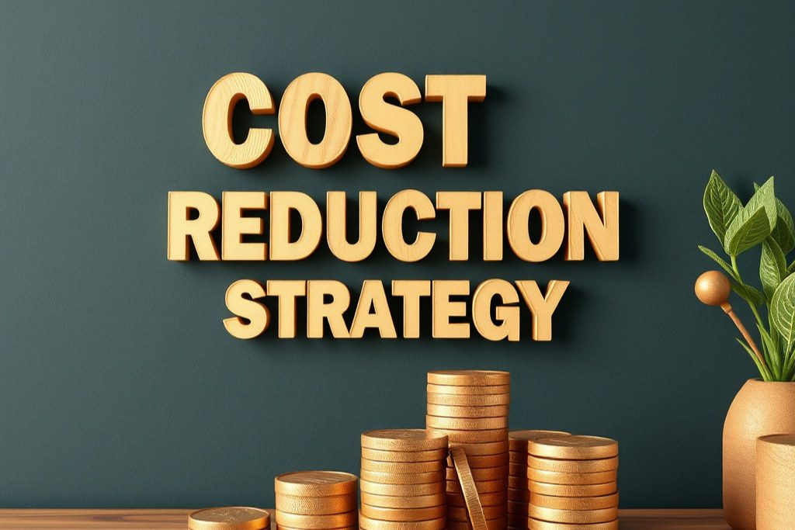

In today's fiercely competitive business environment, cost reduction is vital for organizations aiming to boost profitability and improve efficiency. It might be tempting to think that slashing expenses is the only path to savings, but this can negatively impact quality, employee morale, and customer satisfaction. A more effective approach involves smarter processes that promote continuous improvement and optimize workflows. This post dives into proven strategies for reducing costs through process improvement, highlighting operational efficiency over mere cuts.

Understanding the Importance of Process Improvement
Process improvement is a structured way to enhance the efficiency and effectiveness of your organization’s operations. By analyzing and refining existing procedures, businesses can uncover areas of waste, streamline workflows, and ultimately reduce costs. A study by the Lean Enterprise Institute found that companies that adopt process improvement strategies can increase their productivity by as much as 25%.
The key to successful process improvement is understanding your organization’s specific needs. Engaging employees at all levels and utilizing their insights can help develop tailored strategies to address unique inefficiencies.
Identifying Areas for Improvement
Before implementing cost-saving strategies, conducting a thorough assessment of current processes is essential. This includes mapping workflows, pinpointing bottlenecks, and analyzing performance metrics. For instance, a company that uses value stream mapping can visualize the flow of materials and information. This tool has been shown to help organizations identify up to 30% of their wasted time.
Engaging employees in this assessment is also critical. Frontline workers often possess invaluable insights about daily challenges and can suggest improvements. Creating a culture of open communication encourages a better understanding of operational needs.
Lean Methodology: A Framework for Cost Reduction
One of the most effective methods for process improvement is lean methodology. Lean principles focus on maximizing value while minimizing waste, making it an ideal framework for organizations looking to cut costs. Key lean tenets include:
- Value Identification: Recognizing what customers consider valuable is crucial. For example, a company might find that 70% of customers care about fast delivery times and adjust their processes to prioritize that.
- Value Stream Mapping: This visual tool helps organizations identify waste and optimize workflows.
- Flow Optimization: After identifying waste, organizations can streamline material and information flow. This might involve reorganizing workspaces or using software to improve collaboration.
- Pull Systems: Producing based on customer demand rather than forecasts can decrease excess inventory by as much as 40%.
- Continuous Improvement: Lean is an ongoing journey. Regular reviews and adjustments lead to ongoing efficiencies.
Implementing Process Automation
In our digital age, process automation plays a significant role in improving efficiency and reducing costs. Automating repetitive tasks can save time, lower error rates, and boost productivity. Research suggests that automating tasks can increase efficiency by approximately 20% to 50%.
When considering automation, focus on high-volume, low-complexity tasks. For example, automating invoice processing or data entry can free employees to engage in more valuable work.
Selecting the right technology is essential for successful automation. Organizations should assess various software options to find those that meet their needs. Also, providing employee training ensures a smooth transition and maximizes the benefits of new technologies.
Waste Elimination Techniques
Eliminating waste is fundamental to process improvement and reducing costs. Lean methodology identifies several waste types such as:
- Overproduction: Producing more than required can lead to excess inventory and higher carrying costs.
- Waiting: Delays can cause lost time and lower productivity; minimizing waiting can boost efficiency considerably.
- Transport: Unnecessarily moving materials increases costs and wastage.
- Overprocessing: Doing more work than necessary wastes time and resources.
- Defects: Errors lead to rework and increased expenses.
By systematically identifying and addressing these waste types, organizations can significantly lower costs while improving efficiency.
Cultivating a Culture of Continuous Improvement
To maintain cost reduction efforts, organizations must foster a culture of continuous improvement. Consistently encouraging employees to assess and enhance work processes will lead to sustainable progress.
Training and development programs help instill this culture. By equipping employees with tools to identify and implement improvements, organizations empower their workforce. Recognizing employees’ contributions, whether through formal programs or casual acknowledgment, can further drive their engagement in continuous improvement.
Measuring Success: Key Performance Indicators (KPIs)
To evaluate the effectiveness of process improvement initiatives, organizations should define key performance indicators (KPIs) that align with business goals. These metrics can help monitor progress and demonstrate the impact of cost reduction efforts. Common KPIs include:
- Cycle Time: Measures the time to complete a specific task.
- Defect Rate: The percentage of products failing to meet quality standards.
- Employee Productivity: The amount of output per employee.
- Customer Satisfaction: Feedback scores from customers concerning their experiences.
Regularly tracking these KPIs offers insights into operational efficiency and helps guide future process enhancements.
Real-World Success Stories
Looking at examples of organizations that successfully implemented process improvement strategies offers valuable lessons.
Case Study 1: Manufacturing Company
A mid-sized manufacturing firm struggled with high production costs and lengthy lead times. By adopting lean methodologies and value stream mapping, they uncovered areas for improvement like overproduction and excessive waiting. As a result of these targeted improvements, they reduced production costs by 20% and improved lead times by 30%.
Case Study 2: Service Industry
A service organization faced inefficiencies in its customer support system. By automating routine inquiries and implementing a new ticketing system, they cut response times by over 50%. This not only resulted in lower operational costs but also boosted customer satisfaction ratings significantly.
A Sustainable Path to Cost Savings
Cost reduction does not have to come at the expense of quality or employee morale. By focusing on smarter processes and implementing proven improvement strategies, organizations can achieve substantial savings while enhancing operational efficiency.
From adopting lean methodologies to leveraging process automation and nurturing a culture of continuous improvement, there are numerous avenues for organizations to explore.
The key to success lies in understanding your organization’s unique needs and engaging employees at every level in the process. By prioritizing process improvement, organizations can forge a sustainable path to saving costs and achieving long-term success.